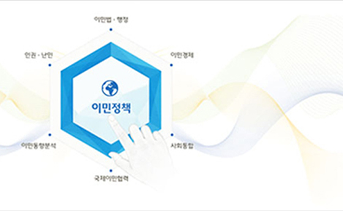

공지사항
행사안내
THEMATIC CELLECTION주제별컬렉션
-
 한국의 위대한 인물
한국의 위대한 인물
한국 역사 속에서 업적을 남긴 사회 각 분야 인물의 저서를 통해현시대를 살아가는 데 필요한 지혜에 대해 알아봅니다. -

이민정책연구자료
국내체류 외국인 실태조사부터 국제사회의 이민정책 환경에 대한 연구까지 다양한 종료의 연구를 수행하여 대한민국 이민정책 개발에 필요한 기반을 마련하고 새로운 정책 방향성을 제시합니다. -
수출 진흥과 한국경제
대한무역투자진흥공사(이하 KOTRA)는 1962년 한국 무역신화의 첫 단추인 제1차 경제개발5개년계획에 뿌리를 두고 설립된 이후 수출시장 개척과 무역 8강 진입에 첨병 역할을 해 왔다.